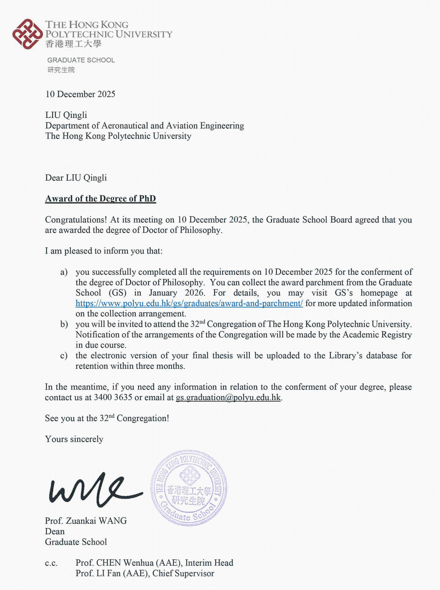
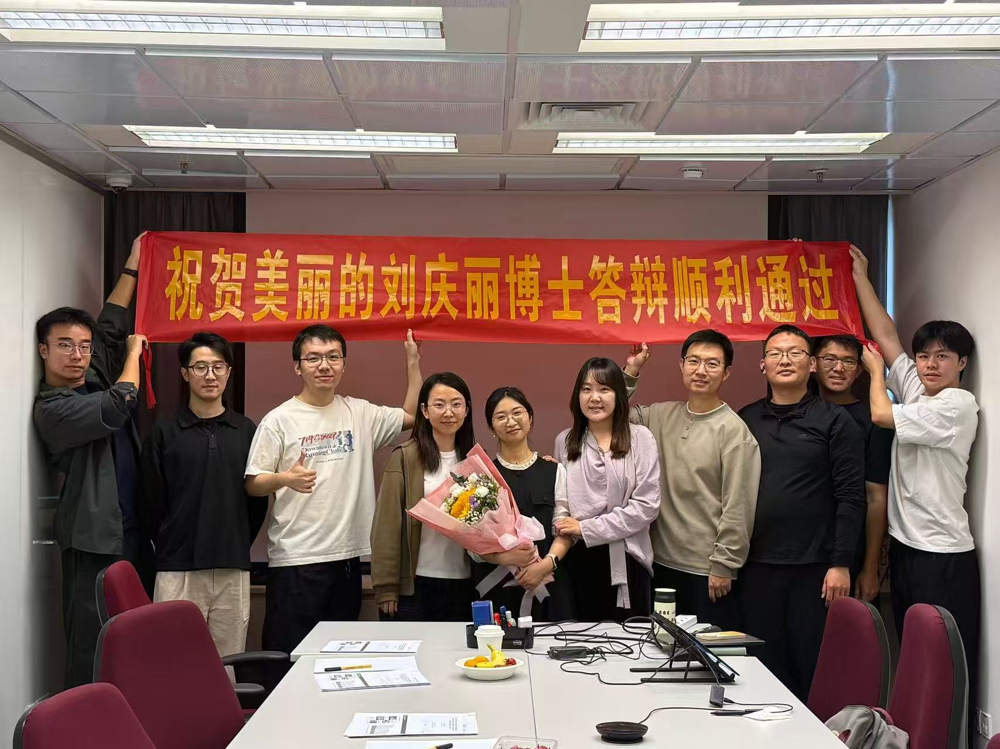
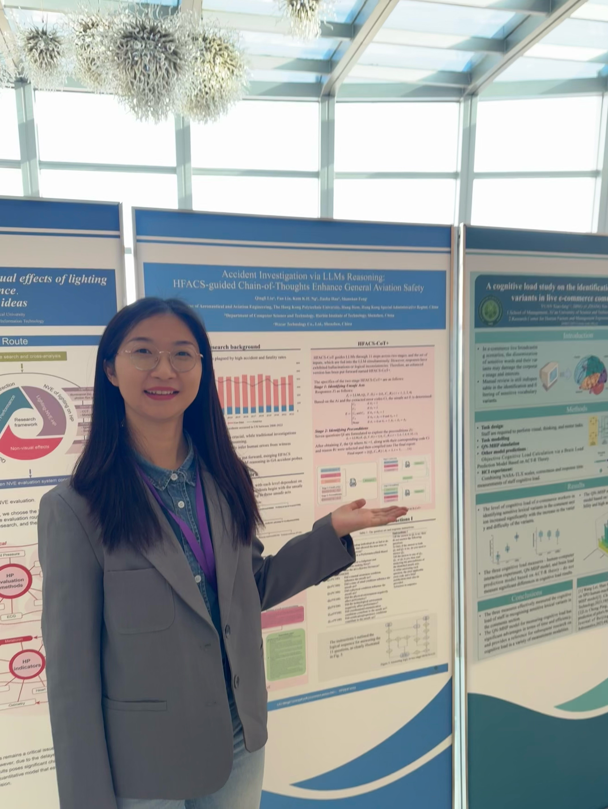
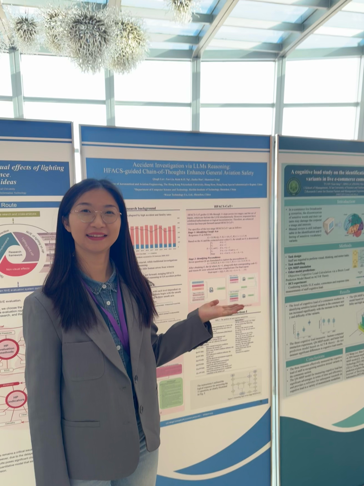
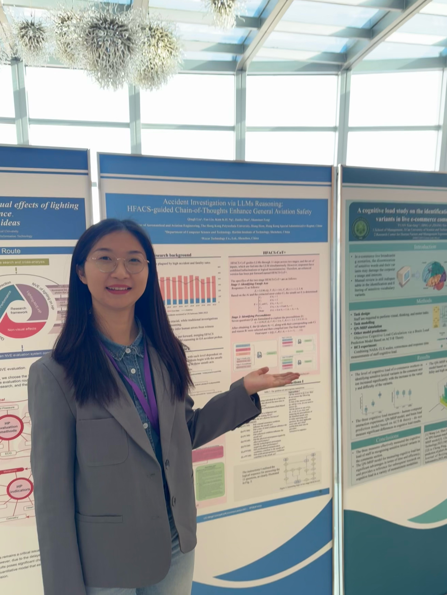

Position
Research Assistant / Postdoc (incoming)
Affiliation
The Hong Kong Polytechnic University
Research
Agentic AI • Safety/Accident Investigation • Human–AI Interaction
About
I am Qingli Liu. I obtained my Ph.D. in the Department of Aeronautical and Aviation Engineering at The Hong Kong Polytechnic University in December 2025. I am currently working as a full-time Research Assistant with Prof. Fan Li. My research focuses on agentic AI–based accident investigation and analysis in transportation systems, with particular interest in interpretable and human-centered approaches for safety-critical decision making. I am actively seeking postdoctoral opportunities and am also open to academic collaborations in related areas. Outside of research, I enjoy swimming and hiking.
Research Interests
- Agentic AI for accident investigation (evidence integration, causal DAG reconstruction)
- Human–AI interaction in safety-critical settings (trust, workload, mismatch)
- Interpretable causal representations and safety decision support
News
2026-01
Website launched on GitHub Pages.
2025-12
PhD degree conferred (Dec 2025).

2025-11-12
Successfully passed my PhD viva (doctoral defense).

2024-11
Attended the International Conference on Human Factors Engineering and Intelligent Systems Interaction
(hosted by Tsinghua University) in Shenzhen, China; presented a poster.
 


2024-07
Attended AHFE 2024 — the International Conference on Applied Human Factors and Ergonomics
in Nice, France, and delivered an oral presentation.

2023-07
Attended TE 2023 (Leveraging Transdisciplinary Engineering in a Changing and Connected World)
in Hua Hin, Thailand, and delivered an oral presentation.